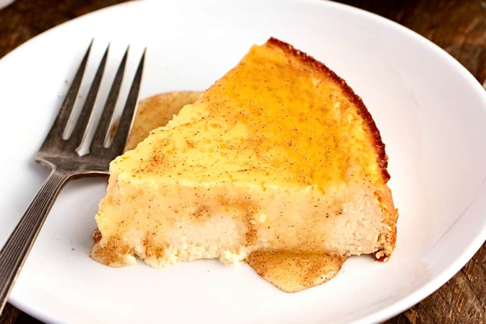

Melopita Sifnos
Home

Description
If you are looking for a sweet treat with only 15' prep time, then this
Greek Honey Cake (Melopita Sifnos) is a simple and delicious cake to make
that will satisfy your craving!
Ingredients
- Olive oil
- 660g ricotta (1lb, 7¼ oz), at room temperature
- 100ml runny honey (5 ½), plus extra for drizzling
- 4 large eggs, at room temperate
- 1½ tbsp cornflour
- 1 tbsp vanilla extract or vanilla bean paste
- zest ½ lemon
- ground cinnamon
Steps
-
Pre-heat the oven to 160°C (320°F). Grease a round loose bottomed
18cm (7 inch) cake tin with a little olive oil before lining both the
bottom and the sides with baking parchent.
-
In a large bowl, use a wooden spoon or a whisk to beat the ricotta until
smooth. Beat in the honey, followed by the eggs, one by one, the
cornflour, the vanilla, and the lemon zest.
-
Scrape the mixture into the prepared tin, smoothing the top with the back
of your spoon.
-
Bake for 50-60 minutes, until the middle is set not jiggly, and it has
started to colour around the sides.
-
Leave to cool in the tin before transferring to a plate and drizzling with
just enough honey to cover the top, and sprinkling with a generous amount
of cinnamon. Enjoy!